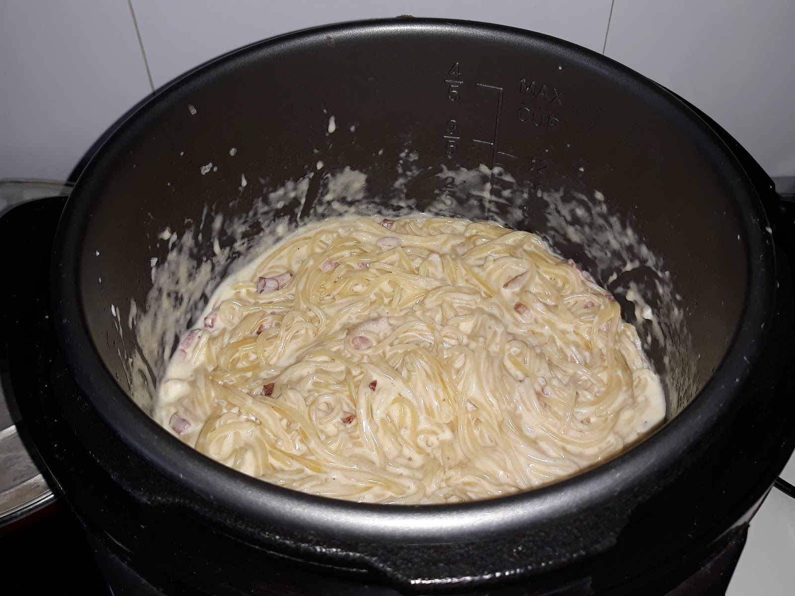

Bacon 75g
Huevos 3
Queso parmesano
Sal
Pimienta
Ajo 1
Ponemos a hervir agua abundante para cocer la pasta, pero no añadimos la sal hasta que no haya empezado a hervir
En una sarten, a fuego bajo (4/12) ponemos el aceite de oliva virgen extra, el ajo aplastado sin pelar y el bacon cortado en tiritas
Mientras tanto, rallamos el queso parmesano y, cuando lo tengamos, en un bol limpio y preferiblemente de acero inoxidable,
batimos bien los huevos, añadimos el queso rallado y unas vueltas de pimienta que puede ser negra o una mezcla de varias.
Echamos a cocer la pasta y, cuando este, añadimos el bacon -sin el ajo- a la mezcla de huevos y la pasta bien escurrida -ni se os ocurra pasar la pasta por debajo del grifo de agua fria!-.
Mezclamos todo bien fuera del fuego para que el huevo se cocine con el calor residual de la pasta.
Servimos los tallarines Carbonara inmediatamente con un poco mas de pimienta recien molida por encima.